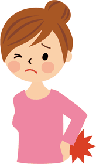

症状のはなし
ぎっくり腰になったら。最初の3日間の過ごし方

- 痛みが強いうちは無理に伸ばしたりもんだりしません
- ずっと寝たままにせず痛みの出ない範囲で少しずつ動きます
- 足のシビレや力の入りにくさがあるときは先に病院へ
重いものを持ち上げたとき、くしゃみをしたとき、朝に顔を洗おうとかがんだとき。「ぎくっ」と腰に痛みが走り、動けなくなるのがぎっくり腰です。
なった直後は不安になりますが、あわてなくて大丈夫です。最初の3日間の過ごし方を知っておくと、落ち着いて対処できます。
なった直後：まず楽な姿勢をさがす
- その場でゆっくり動きを止める
あわてて立ち上がろうとせず、痛みが少ない姿勢をさがします。 - 横向きで膝を軽く曲げて休む
横向きに寝て、膝のあいだにクッションやたたんだタオルをはさむと楽になることがあります。あお向けのときは、膝の下にクッションを入れます。 - 起き上がるときは横向きから
あお向けからそのまま起きると腰に力がかかります。いったん横向きになり、手で床を押しながら起き上がります。
1日目〜3日目：やらないこと
- 痛みが強いうちに、無理に伸ばしたり、ストレッチをしたりする
- 痛い場所を強くもんだり、たたいたりする
- 熱っぽさがあるうちの、長湯や飲酒
- 重いものを持つ、長い時間の運転
1日目〜3日目：やること
- 痛みの出ない範囲で少しずつ動く
ずっと寝たままでいると、かえって動きにくくなります。トイレや食事など、できる範囲で普段の動きを続けます。 - 動くときはお腹に軽く力を入れる
立ち上がるとき、かがむときは、下腹を軽く引きこんでから動くと、腰が支えられて楽です。 - かがむときは膝を曲げる
腰だけを曲げず、膝を曲げてカラダごと下げます。顔を洗うときは、片手を洗面台について支えましょう。
ポイント
ぎっくり腰は、その一瞬の動きだけが理由とは限りません。つかれや姿勢のくせ、カラダの歪み（ユガミ）が重なっていたところに、最後のきっかけが加わって起こることが多いものです。
先に病院へ行ったほうがよいのはどんなときですか？
- 足のシビレが強い、足に力が入らない
- 排尿・排便のトラブルがある
- 熱がある、じっとしていても痛みがどんどん強くなる
- 転んだ、ぶつけたなど、強い力が加わったあとの痛み
このような症状があるときは、整骨院より先に、整形外科などの医療機関を受診してください。
痛みが落ち着いたあとが大切です
ぎっくり腰は、痛みがなくなるとそのままにしてしまいがちです。けれども、腰に負担が集まるカラダの使い方が変わらなければ、またくり返すことがあります。座り方や立ち方、お腹の使い方を少しずつ見直して、くり返しにくいカラダをめざしましょう。
- 直後は楽な姿勢をさがし、無理に伸ばしたりもんだりしない
- 寝たままにせず、痛みの出ない範囲で少しずつ動く
- シビレや力の入りにくさがあるときは、先に病院へ
関連するページ
← ブログの一覧へ